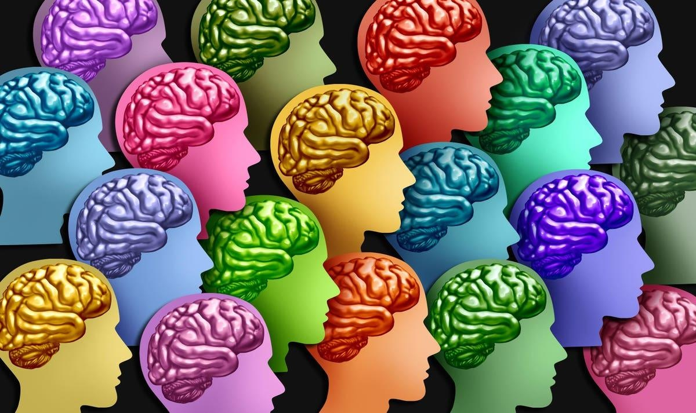

Neurodiversity In The Workplace: Why It's An Asset, Not A LiabilityOne in five adult Americans is neurodiverse, which means they learn differently. And that’s okay. It’s time to meet them where they’re at in the classroom and in the workplace. While the “Great Resignation” has eased, I’m not sure I totally buy that we’ve transitioned into what some have called the “Great Stay.” Regardless, what’s certainly true is that organizations of all kinds are still on the hunt for people. The War for Talent continues. One of the ways that organizations can gain an edge in their recruiting and retention efforts is to find ways to engage their employees and meet them where they are at. That’s especially true for members of the younger generations, who want to be valued and seen. That’s why it’s time for organizations seeking to engage their workforce to acknowledge an elephant in the room: how common learning differences are. I was stunned to learn that 20% of adult Americans have some form of learning and attention issue. That’s some 65.6 million members of the workforce, according to U.S. Census Bureau data. In other words, it’s likely that one out of every five members of your organization is a neurodiverse individual who might be struggling if they’re treated like everyone else. “Right now, the onus is on the individual with the learning difference to ask for what they need,” says David Flink, the CEO and co-founder of Eye to Eye, a non-profit organization that works with neurodiverse kids and their schools all across the country. Flink’s mission with his organization is to find ways to empower neurodiverse individuals, both in the classroom and in the workplace, to ensure that no one is left behind. I conducted an email interview with Flink to learn more about how organizations can adapt to better serve people with learning differences. Here’s what we covered. Demystifying neurodiversity As a father to a neurodiverse individual, I understand that there can be a stigma attached to anyone with a learning disability, e.g. that they might not be as smart as their peers or colleagues. This is flat wrong. As Flink explained, neurodiverse people simply learn differently. “What sets them apart is that they may access or process information in an atypical way,” he says. “So these can be people with dyslexia, ADHD, or other issues that lead to challenges in learning.” Flink started his organization 25 years ago when he was a student at Brown University, in part because of his own frustrations with the lack of support for young people like himself working to overcome their learning challenges. His goal was to improve the educational experience and outcomes of neurodiverse young people while engaging them and their allies in the movement for a more equitable and inclusive society. “Many of these kids—myself included—grew up with a real stigma around learning disabilities,” says Flink. “We tried to hide our disabilities and got frustrated when something so easy for others—like reading—was hard for us. At Eye to Eye, we celebrate those differences.” Flink’s organization connects middle school kids with students who are in high school or college so that younger teens learn from older ones and see that there are others who learn differently and succeed. “The young people meet after school, share their stories and develop a sense of community,” says Flink. “The ultimate goal is to give the mentees and their mentors the confidence they need to navigate a school system not designed for them and advocate for the community-wide changes they need to achieve.” Learning on the job Flink’s efforts are focused on encouraging young people to ask for and push to get accommodation in the classroom, and ultimately, in the workplace. “It’s something we are entitled to do,” he says. “Employers should be thoughtful when assessing what needs to be done and work with the employee to reach the same level of excellence at the same speed.” And making these accommodations doesn’t have to be expensive. It could be as simple as getting a standing desk—a price that pales in comparison to the true cost of losing a valuable employee. Flink would also like to see individual education plans, or IEPs, that are used in classrooms implemented in the workplace. “I would encourage employers to invite employees to share their stories and outline what accommodations help them work better,” he says. “Employers should also understand that accommodations may need to be adjusted depending on the task.” In Flink’s opinion, developing this aspect of your human resource program can also be appealing to those who don't have learning differences. “All employees can contribute more efficiently and productively by advocating for reasonable adjustments that help us work better,” he says. “By inviting employees to share their needs, managers build trust. “This trust can lead to greater employee retention, enhanced productivity, increased morale, and a truly inclusive workplace.” The importance of opening up So, how should someone who experiences learning difficulties open up to their employer in, say, a job interview? Flink suggests sharing as much or as little about their learning difference as they would like and feel comfortable doing so. “I also would encourage them to share some of the resources, tools, or support that have helped them succeed with their learning difference,” he says. “For those of us who are neurodiverse, our learning differences are gifts that allow us to see the world differently and find solutions to complex problems. We are an asset to potential employees.” I’d like to underline Flink’s point that any organization that overlooks the potential talent of someone with a learning difficulty is shooting itself in the foot. In fact, I’d like to see more organizations think about how they can encourage more of their employees to open up about the challenges they face on a daily basis. Consider the story of Cymeria Robshaw, an Eye to Eye chapter leader and a young person with learning disabilities I also interviewed over email. Like my own son, Cymeria has ADHD. Before her diagnosis during her sophomore year of college, she considered dropping out. She struggled to keep up with the reading requirements, paying attention in lectures and in finishing exams on time. “Overall, the college education system is not tailored to meet the needs of individuals who learn differently,” says Robshaw, who recognized that if she was going to graduate, she needed to ask for help. It was through the Eye to Eye mentoring program that she learned the power of self-advocacy, speaking up for herself and adopting new habits and tools that improved her efficiency and helped her graduate college as an A student. “The advice I want to share is don't be afraid to share your story,” says Robshaw. “People who have learning disabilities can share what works for them. And sharing with those who don't have disabilities creates allyship but also a greater understanding of how easy and necessary accommodations are.” Let’s all take Robshaw’s advice and chart a path forward where every workplace embraces neurodiversity as an asset, not a liability. |
 |